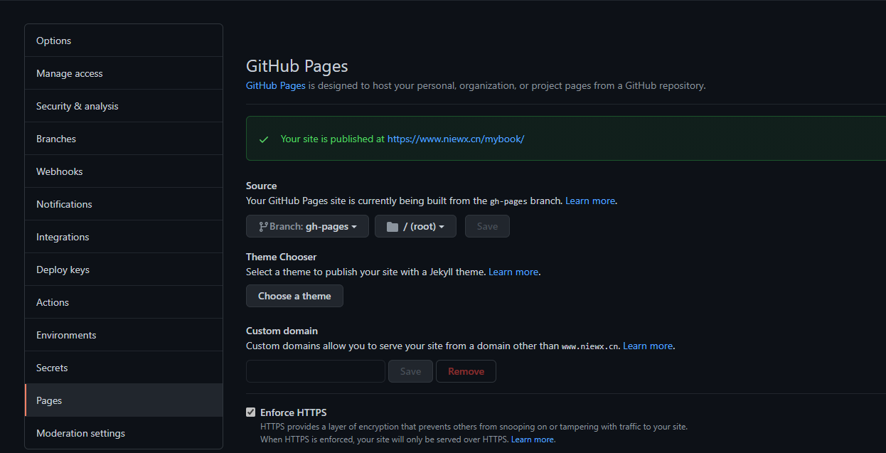
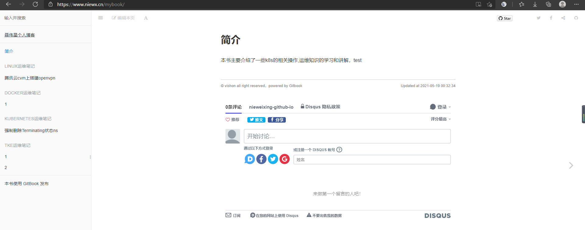

github创建代码分支
这里我们创建了一个mybook的代码仓库用来存放gitbook
编译gitbook为静态文件
# cd gitbook
# mkdir content
然后将所有的md文件拷贝到content目录下，然后我们运行gitbook
gitbook serve ./content ./gh-pages
这样会自动创建 gh-pages 文件夹，文件夹中的内容，就是编译后的输出。
编写自动化脚本部署gitbook
自动化创建和更新 gh-pages 所以，我们采用一个 npm 包，来帮助我们完成上面的操作
cd gitbook/
npm i gh-pages
然后创建 gitbook/scripts/deploy-gh-pages.js
里面的内容是：
'use strict';
var ghpages = require('gh-pages');
main();
function main() {
ghpages.publish('./gh-pages', console.error.bind(console));
}
上面的脚本的作用，就是把当前文件夹下的 gh-pages 文件夹中的所有内容，push 到本仓库的 gh-pages 分支。
然后在根目录下package.json文件添加几个npm脚本 deploy （ deploy 就是部署的意思），还有 build （意思是编译），还有 publish（意思是发布），如下：
{
"name": "gitbook",
"version": "1.0.0",
"description": "",
"main": "index.js",
"scripts": {
"start": "gitbook serve ./content ./gh-pages",
"build": "gitbook build ./content ./gh-pages",
"deploy": "node ./scripts/deploy-gh-pages.js",
"publish": "npm run build&&npm run deploy"
},
"repository": {
"type": "git",
"url": "git+://github.com/nieweixing/mybook.git"
},
"keywords": [],
"author": "",
"license": "ISC",
"bugs": {
"url": "https://github.com/nieweixing/mybook/issues"
},
"homepage": "https://github.com/nieweixing/mybook#readme",
"dependencies": {
"cheerio": "^1.0.0-rc.9",
"gh-pages": "^3.1.0",
"gitbook-plugin-code": "^0.1.0",
"gitbook-plugin-mygitalk": "^0.2.6",
"gitbook-plugin-prism": "^2.4.0",
"gitbook-plugin-prism-themes": "0.0.2",
"prismjs": "^1.23.0"
}
}
这样，以后我修改了书稿，只需运行
npm run publish
如果命令返回 undefined 字样，表示没有出现错误，部署成功。 就可以把最新的书稿 push 到远端仓库的 gh-pages 分支了。
配置github page
进入仓库，选择settings选项，找到page选项，配置下GitHub Pages，这里我之前配置了我自己的域名到github，所以我这边显示的自定义域名，而不是github.io这个

通过域名访问gitbook
浏览器输入https://www.niewx.cn/mybook，就可以查看gitbook了
